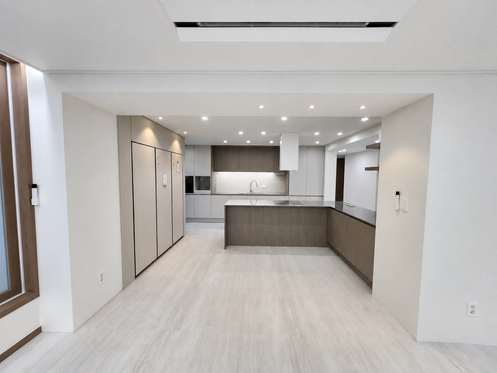

BUILT PROJECT / 2014
시공 · BUILT테이블온더문TABLE ON THE MOON
벽돌, 블랙 프레임, 목재 테이블로 구성한 다이닝 공간.

04PROJECT OVERVIEW
벽돌과 빛이 만드는 다이닝의 장면.
벽돌 벽면과 노출된 천장, 블랙 금속 프레임을 목재 테이블과 함께 구성한 레스토랑 현장입니다. 유리 파티션으로 나뉜 좌석과 벽면 벤치, 펜던트 조명이 여러 크기의 식사 공간을 이어줍니다.
PROJECT GALLERY
공간의 장면들
